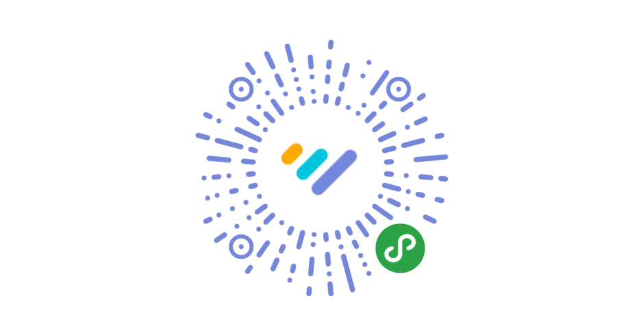
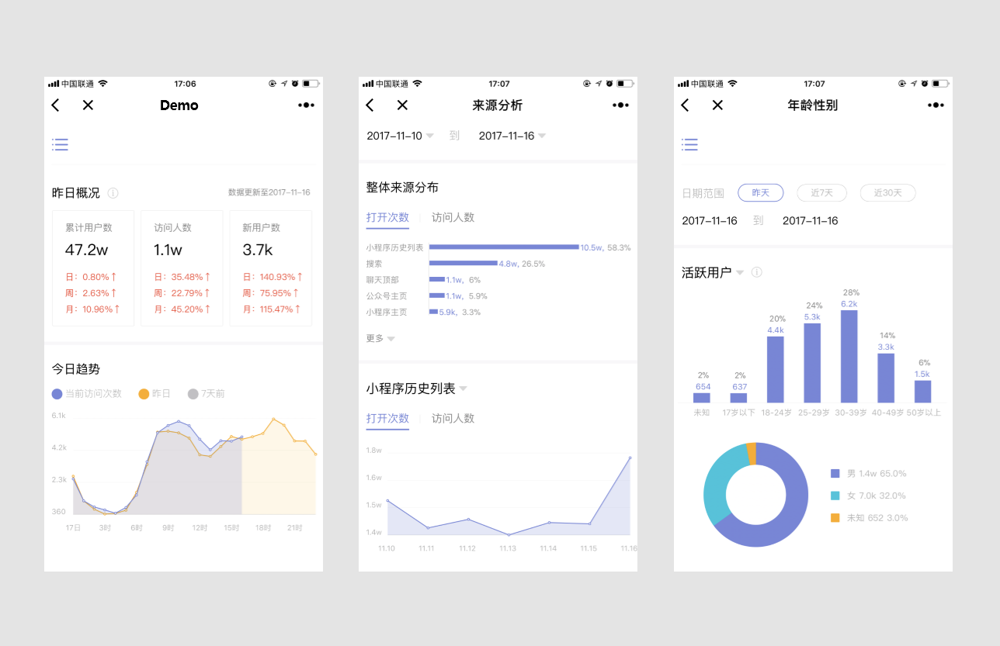
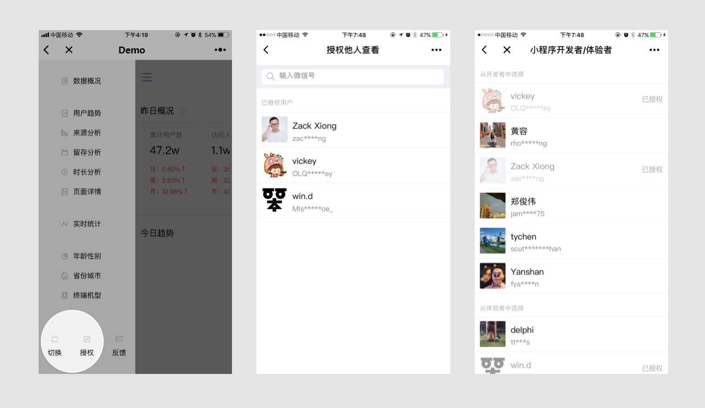

7.5. 小程序数据助手¶
7.5.1. 功能概述¶
“小程序数据助手”是微信公众平台发布的官方小程序，支持相关的开发和运营人员查看自身小程序的运营数据，扫描下面小程序码可立即体验。

a0¶
“小程序数据助手”当前功能模块包括数据概况、访问基础分析（用户趋势、来源分析、留存分析、时长分析、页面详情）、实时统计和用户画像（年龄性别、省份城市、终端机型），数据与小程序后台常规分析一致。

a1¶
数据详细说明参见常规分析
7.5.2. 使用说明¶
小程序管理员： 打开“小程序数据助手”，可以选择查看已绑定小程序的数据。 其他微信用户：经管理员授权后可以查看已授权小程序的数据。
7.5.2.1. 管理员授权¶
点击左上角菜单，在导航页中选择“授权”；
在搜索框中输入微信号查询，或“从小程序开发者/体验者中选择”，点击“授权”；
授权成功后，被授权用户将接收到模板消息通知；

a2¶